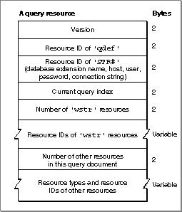

Legacy Document
Important: The information in this document is obsolete and should not be used for new development.
Important: The information in this document is obsolete and should not be used for new development.


The Query Resource
Each query document should contain a single'qrsc'resource. Figure 12-9 shows the format of the'qrsc'resource.Figure 12-9 Structure of a compiled query (
'qrsc') resource
A
'qrsc'resource contains these elements:
- The version number of the
'qrsc'format. For the Data Access Manager released with System 7, the version number is 0.- The resource ID of the
'qdef'resource containing the query definition function that the Data Access Manager is to call when it opens this'qrsc'resource. Use an ID of 0 if there is no query definition function for this resource--that is, if the Data Access Manager should send the query in this resource to the data server without modifications.- The resource ID of an
'STR#'resource that contains five Pascal strings corresponding to some of the parameters used by theDBInitfunction. If the query definition function is going to prompt the user for the values of these parameters before entering them in the query record, they should be zero-length strings in the'STR#'resource.- An index value indicating which element in the array of
'wstr'IDs represents the current query. The current query is the one actually sent to the data server.- The number of
'wstr'resources in the query document.- An array of resource IDs of the
'wstr'resources in the query document. (The array elements are numbered starting with 1.) If the query document contains more than one'wstr'resource, the query definition function can prompt the user to select the query to use and modify the current query field in the query record appropriately.- The number of other resources in this query document.
- An array listing the resource types and IDs of all the resources in the query document other than the standard resources included in all query documents. The resources listed in this final array are those used by the query definition function. This list should include resources embedded in other resources, such as a
'PICT'resource that is included in a'DITL'resource.